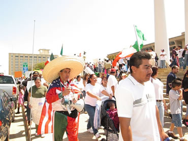

El español: un idioma emergente
Más de 500 millones de personas hablan hoy español. Reforzada por una rica tradición cultural, la lengua española goza de una amplia presencia internacional. El español se ha convertido en un idioma emergente que aspira a ser la segunda lengua mundial.
Razones para el crecimiento del español
El gran crecimiento demográfico de las sociedades latinoamericanas y la supervivencia del español en centros históricos, sostienen en parte esa emergencia. Pero hay otras razones. Brasil se ha convertido en uno de los mercados más potentes para la literatura y la música hispana, con un crecimiento del 500 por ciento, en los dos últimos años. La enseñanza del español ha aumentado tanto que 50 centros universitarios ofrecen licenciaturas en español, y el Ministerio de Educación brasileño calcula que en los próximos años el país podría necesitar 210.000 profesores de español, sobre todo, si finalmente se aprueba el español como materia obligatoria en la enseñanza secundaria.
En Asia Oriental la curiosidad por la cultura latina y el deseo de estrechar lazos económicos abren las puertas al español, que es ya la segunda lengua más estudiada en las universidades japonesas.
Pero el avance más espectacular es el que esta lengua ha vivido en los EE.UU. En los EE.UU. el español prospera y no sólo entre la comunidad hispana, ya que casi 80 millones de estadounidenses lo utilizan como segunda lengua. Además, los más de 42.700.000 hispanos que viven en el país, su creciente peso político, su potencial económico y la proliferación de medios de comunicación en español, han impulsado esa emergencia.
Los hispanos y el español en los EE.UU.
Hoy es más fácil, que en ningún otro momento de la historia, ser hispano y vivir el español en los EE.UU. El factor de crecimiento demográfico es el principal elemento de la fuerza de los hispanos que viven en los EE.UU. Según proyecciones de la oficina del Censo, con base en Washington, D.F., los hispanos rozarán los 571 millones de personas, el doble de lo que es actualmente.
Con 100 millones de personas, los hispanos pueden marcar el ritmo de la sociedad norteamericana de finales del siglo XXI, cuando la mayoría anglosajona representará menos del 50 por ciento de la población. El resto se compondrá de minorías étnicas, lideradas por la hispana.
Prueba de la vitalidad económica de los hispanos es el